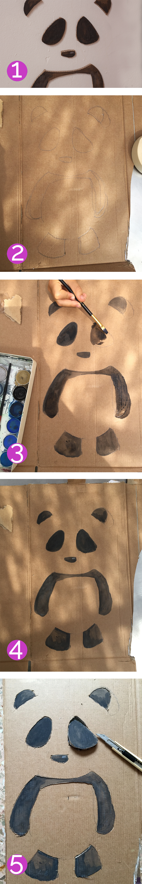

Wall decoration
Panda with relief.
1. Finishing
2. Paint the shapes on a cardboard
3. Paint the shapes with black color
4. Cut shapes with cutter
Place the parts in the same position as on the cardboard on the wall.
1. Acabado

